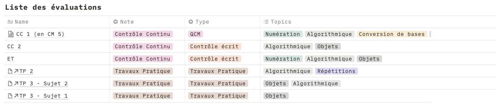
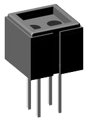

→ Tous les détails sur le syllabus du cours disponible dans le moodle du cours !
Carte du cours
État du niveau en programmation de la promo
Peu ou pas d'expérience de programmation
Besoin de rappel
Bonne expérience
Programmateur expérimenté
Pre-requis
Connaissances :
Cours de programmation : on reprend tout à plat
On insiste dans ce cours plus sur l'algorithmique et on donne des éléments sur la représentation des données
Matériel
Machine personelle avec Anaconda (voir syllabus)
Compte Github pour les TPs : s'inscrire dés maintenant !
Pourquoi la programmation informatique ?
Programmer un ordinateur ?
Programmer c'est de fournir à un ordinateur des instructions afin d'accomplir une tâche spécifique. Cela se fait en amont de l'exécution de la dite tâche qui se fait lors de l'éxécution du programme.
Comment indiquer à l'ordinateur de faire une tâche ?
→ On utilise un langage de programmation !
Dans ce module on utilise le langage de progammation Python.
Une analogie avec la musique
En pratique
Le programmeur écrit un programme
Le programme donne une liste d'instructions à la machine
Sauf que... l'ordinateur n'est pas très intelligent...
On passe par un interpréteur qui traduit un langage plus haut niveau en instructions simples
65+i
movq 8(%rbp), %rdx
movq $65, %rax
addq %rdx, %rax
Qu'est-ce qu'on peux faire avec ça ?
Réalisation de jeux vidéos..
Qu'est-ce qu'on peux faire avec ça ?
Digital art..
@ Robert Felker
→ https://www.youtube.com/watch?v=6avJHaC3C2U
Qu'est-ce qu'on peux faire avec ça ?
Boids: Simulation de comportement d'oiseaux/poissons
Organiser automatiquement une bibliothèque musicale avec règles
Faire des sites webs
Rapports financiers automatique d'une entreprise
Vos exemples d'applications
Représentation d'informations en informatique
Comment représenter de l'information dans un ordinateur ?
Un circuit électrique peut laisser passer ou non le courant électrique à l'aide de transistors.

L'état du transistor (laisser passer ou non) donne une information sur 1 bit.
Fonction de codage : $ f:\{On, Off\} \rightarrow \{0, 1\}.$
→ Il est nécéssaire de considérer un espace de représentation binaire et y associer un codage pour les éléments que l'on veut utiliser.
Exercice: plaque d'immatriculation
Depuis 2009, la France utilise un nouveau système de numérotation des véhicules.
Actuellement, les lettres I, O, U ne sont pas utilisées pour éviter les confusions avec, respectivement, 1, 0 et V. Le couple de lettres SS n’est ni utilisé à gauche, ni à droite. Le couple de lettres WW n’est pas utilisé à droite.
Avec ce système, combien de véhicules peut-on immatriculer ?
Si l’on affectait un code binaire à chaque véhicule pouvant être représenté selon ce code, combien de bits seraient nécessaires ?
En choisissant un code binaire pour chaque lettre et un code binaire pour le nombre, combien de bits seraient nécessaires ?
Sachant qu’il y avait environ 37 millions de véhicules immatriculés en 2009 et qu’il y a environ 3 millions de nouvelles immatriculations chaque année, quelle est la durée approximative de ce codage ?
Exercice à la maison
Soit \(A\) une partie (sous-ensemble) d’un ensemble fini \(E\).
Proposer une représentation simple de \(A\) qui permette, de vérifier si \(B\),
une autre partie de \(E\), est incluse dans \(A\).
Conseil : faire une analogie entre le nombre de parties possibles d’un ensemble \(E\) à \(n\) éléments et
le nombre d’informations représentables sur \(n\) bits. En déduire un codage pour représenter un sous-ensemble de \(E\).
L’intersection des deux ensembles permet de savoir si une partie est incluse dans une autre.
Avec le codage précédent, déterminer l’opération logique entre les codes des deux sous-ensembles
qui permette de répondre au problème.
Quoi représenter pour faire de la programmation ?
Nombres : indispensables pour gérer tout problème de programmation...
Nombre entiers
Nombre entiers signés
Nombres à virgules
Chaîne de caractères : pouvoir afficher, gérer du texte, c'est utile...
Booléens : pour des valeurs de Vrai/Faux
→ Il faut trouver une représentation de ces éléments en codage binaire !
Notions de codage de nombre
Un peu de théorie sur la représentation de nombres i
Un nombre est représenté par une suite de chiffres lus de gauche à droite. Pour un nombre exprimé en base $B$, chaque chiffre appartient à un ensemble de $B$ symboles distincts.
Exemples :
En base 2 : $x \in \{0,1\}$
En base 10 : $x \in \{0, 1, 2, 3, 4, 5, 6, 7, 8, 9 \}$
En base 8 : $x\in\{0,1,2,3,4,5,6,7\}$
En base 16 : $x \in \{0,1,2,3,4,5,6,7,8,9,A,B,C,D,E,F\}$
Un peu de théorie sur la représentation de nombres ii
Soit $N_{10}=9_{10}$, en base $10$ (dénoté par l'indice), on peut avoir le même nombre dans les autres représentations:
En base 2 : $N_2 = 1001_2$
En base 8 : $N_8 = 11_2$
En hexadécimal : $N_{16} = 9_{16}$
→ Comment à partir d'une représentation dans une base $B$ quelconque, on revient à une base 10 ?
Hint : Comment est construit le code d'un nombre en base 10 ?
Conversion de base $B$ à la base 10
Soit $N_B = x_{n-1}...x_2x_1x_0\ _B$ un nombre en base $B$ donné sur $n$ chiffres. On obtient le codage de ce nombre en base $10$ par la formule :
\[
(N_B)_{10} = p_{n-1}.B^{n-1} +...+ p_2.B^2+p_1.B^1+p_0.B^0
\]
Exercice :
Soient $T=323_8$, $U=323_{16}$, $V = 1AF_{16}$ et $W=323_3$. Comment s’écrivent respectivement ces nombres en base $10$ ?
Conversion de la base 10 à une base $B$
Soit $N_{10} = x_{n-1}...x_2x_1x_0\ _B$ un nombre en base $10$ donné sur $n$ chiffres. Comment obtenir le codage de ce nombre dans une base quelconque $B$ ?
On a vu que si $N_B = x_{n-1}...x_2x_1x_0\ _B$ sa conversion en base 10 est $(N_B)_{10} = p_{n-1}.B^{n-1} +...+ p_2.B^2+p_1.B^1+p_0.B^0$.
Quelle information fournit la division euclidienne de $(N_B)_{10}$ par $B$ ?
En déduire un principe général de conversion d'un nombre en base 10 vers une base quelconque.
On écrira $^P(N_A)_B$ la conversion du nombre $N$ exprimé en base $A$ vers la base $B$ sur $P$ chiffres.


:format(webp):no_upscale()/cdn.vox-cdn.com/uploads/chorus_asset/file/20012300/90774293.jpg.jpg)

 @ Robert Felker
@ Robert Felker